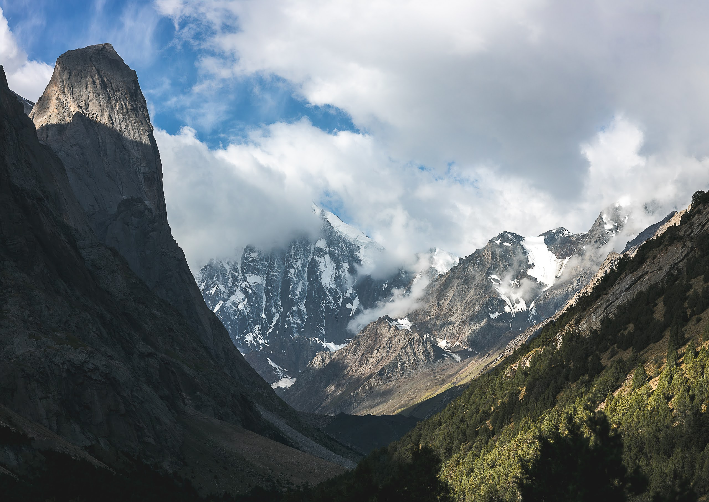
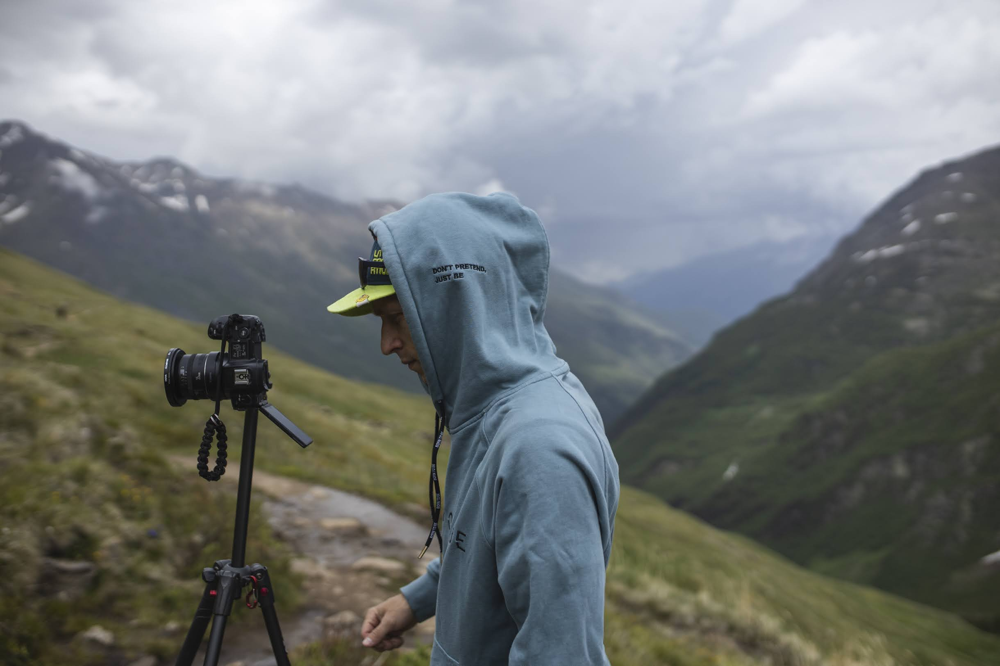
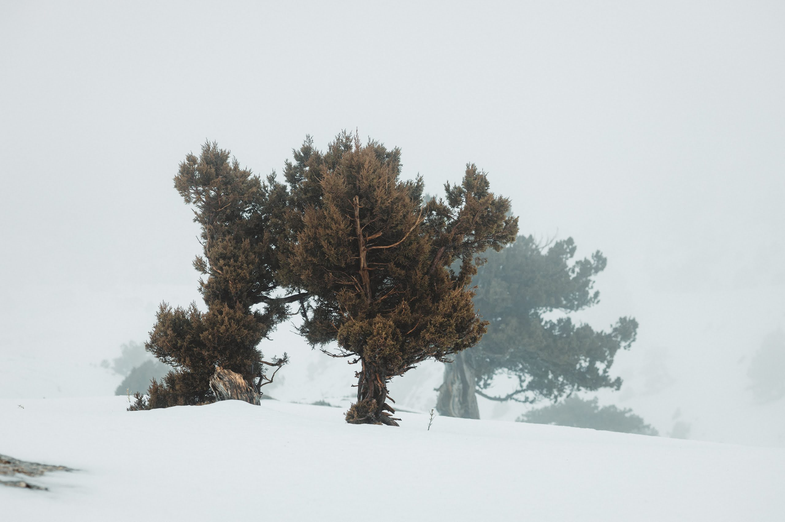
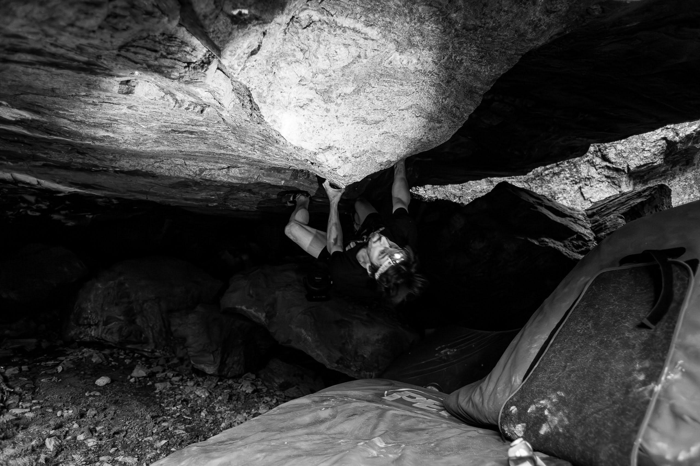
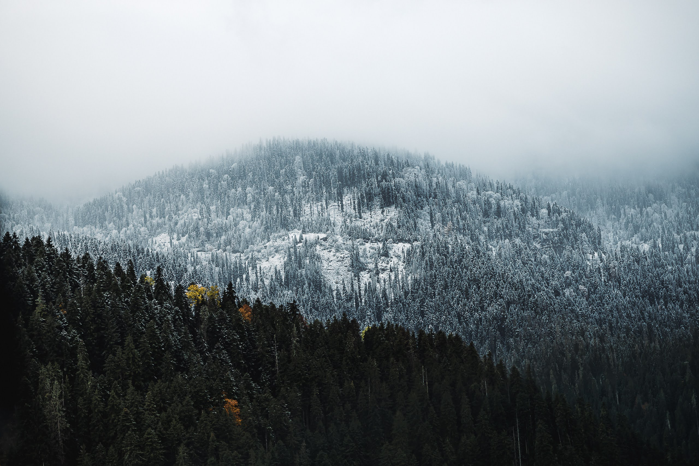
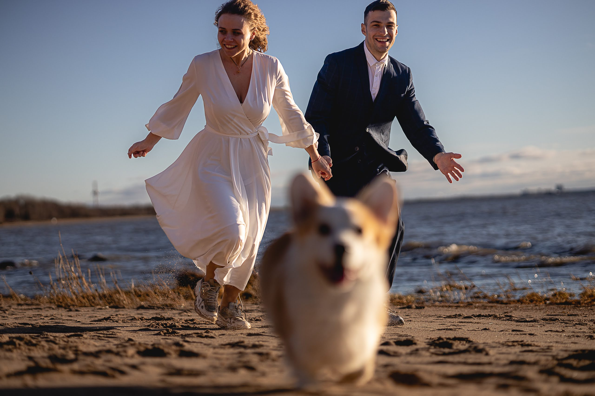
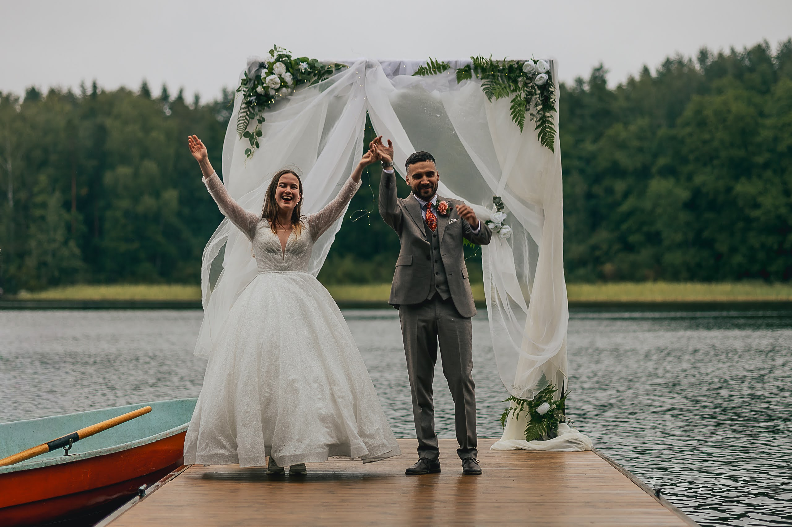

Subtitle several words
Climbing Documentary
The film was shot over the course of a few weeks in the Dolomites, Italy, following a small team of climbers exploring lesser-known routes. The project focused on quiet moments as much as the climbs themselves: early mornings, long approaches, and tired post-wall conversations.
Nikolai worked as a camera operator, documenting both the movement on the rock and the crew around it. The team consisted of two climbers and a small support crew, keeping things simple and flexible. Most of the filming was done on lightweight gear, often carried during the climbs, allowing for a more intimate and immediate perspective.






